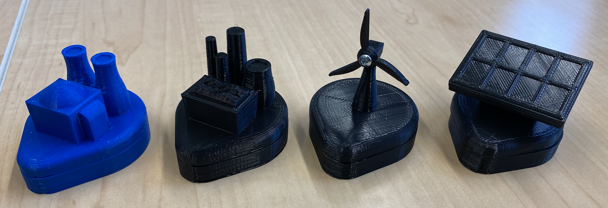
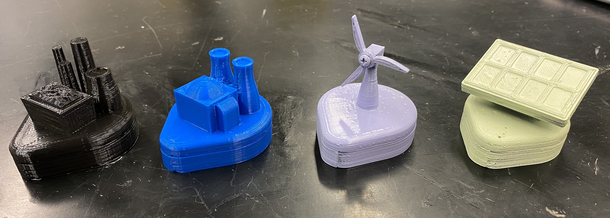
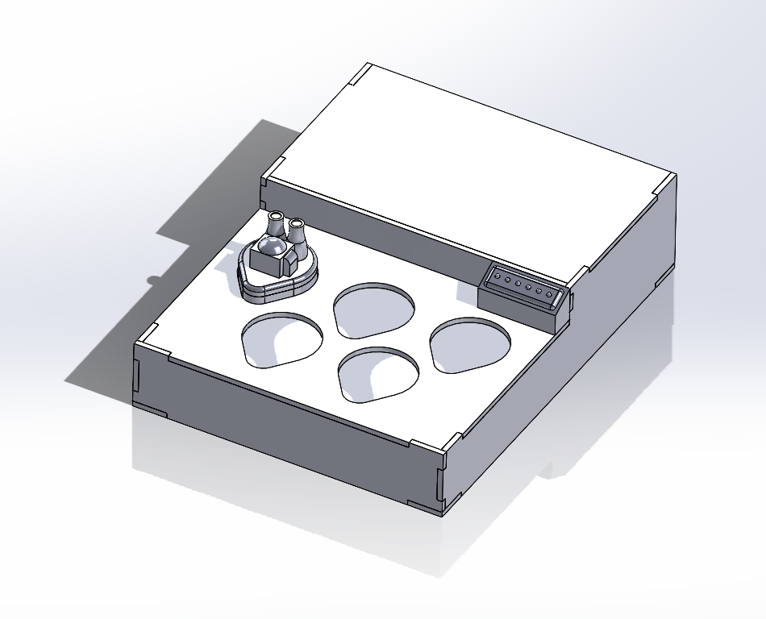
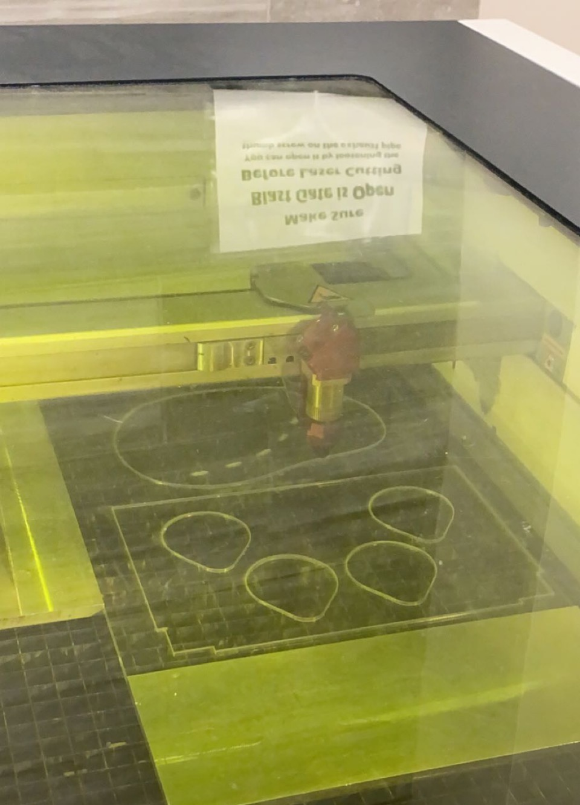
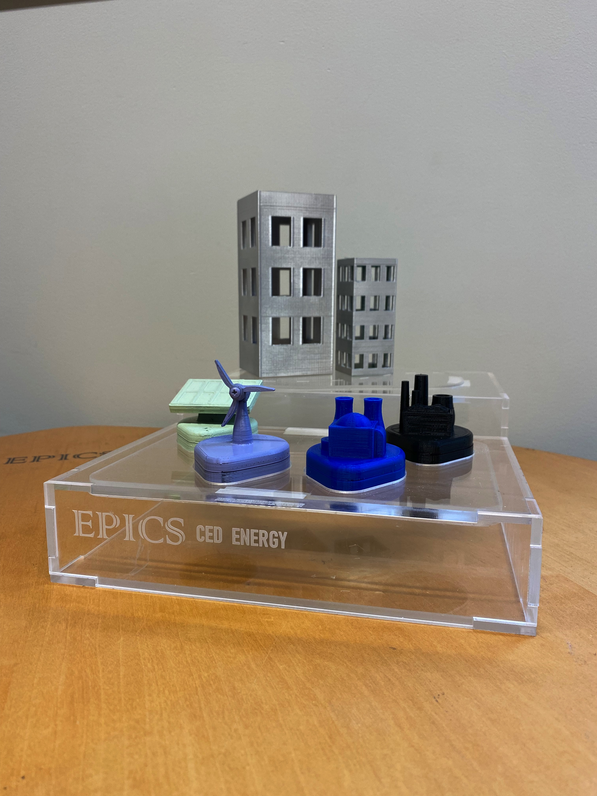

EPICS CED - Energy
FALL 2021 (ONGOING) - The Energy project, identified and started in Spring 2021, is an interactive minigame designed to teach children about the types of energy that go into powering our society.

As the team design lead, I'm currently collaborating with my team of mechanical, electrical, and computer engineering students to design this minigame for our community partner CISTAR, an NSF Engineering Center. While my teammates focus on the electrical implementation of the minigame, I'm responsible for the CAD design of power plant "chess pieces," which are the main component that children get to touch and interact with, as well as the build plate that houses all components.
The Chess Pieces
Throughout the prototyping process, some of my largest design considerations are:
- Design for manufacturability
- Part strength, safety, and longevity

Design for Manufacturability: 3D Printing
 Past project experience with manufacturability concerns led me to prioritize this design consideration: I kept in mind the 3D printability of each chess piece throughout concept generation and detailed design stages, and made sure that each piece can either be printed without extra support material or easily split into pieces that can be done so. This not only improves the surface finish of each part, but also means we create the least plastic waste we can!
Past project experience with manufacturability concerns led me to prioritize this design consideration: I kept in mind the 3D printability of each chess piece throughout concept generation and detailed design stages, and made sure that each piece can either be printed without extra support material or easily split into pieces that can be done so. This not only improves the surface finish of each part, but also means we create the least plastic waste we can!
Part strength, safety, and longevity
 Because these pieces are the main components that children will get their hands on and play with, they need to be robust and cannot snap off into choking hazards.
Because these pieces are the main components that children will get their hands on and play with, they need to be robust and cannot snap off into choking hazards.
To accomodate magnets that activate the electrical circuit that make up the heart of the minigame, the chess pieces have hollow bases. In order to keep the top and bottom halves separable for maintenance, I chose to implement "threaded heat-set inserts" to interface between the plastic part and metal screws, which ensure that the parts last with repeated fastening.
Feedback and Iterations
Following midterm design review, one concern raised was how children could tell the pieces apart, as the coal and nuclear pieces look similar in design. We decided to test the use of different colors on the pieces by spray painting them, but a few issues arose:
- Spray paint fumes smell quite unpleasant and remained on the pieces, even after a month
- Some filler-primer sprays seem to be incompatible with PLA and result in bubbling and paint clumps
Fortunately, the spray paint test results still gave us plenty of insight: the colors provide a good contrast between pieces, and children have additional visual indicator to distinguish between the chess pieces. Below is a before-and-after comparison.
 The Build Plate
As with the chess pieces, when it came to designing the build plate I knew I wanted to make something that was easily manufacturable. Our team opted to use laser-cutting acrylic sheets to make use of leftover material from previous semesters so that they wouldn't go to waste.
With material and manufacturing method determined, my next task was to create a CAD model of each panel of the box. I drew each panel and how they'd fit together on a whiteboard, then created parts in SolidWorks (left) and exported them as AutoCAD 2D drawing files.
In AutoCAD I then organized each piece to fit into the 10x12.5 inch sheets we had available (below). Various line colors designate laser cutting order: White for raster etching goes first, followed by blue for internal cuts, and red for external cuts. Magenta lines represent each acrylic sheet's border.
Design for Manufacturabilty: Laser Cutting
One shortcoming of my earlier EPICS project Reflex's similar laser-cut enclosure was that the pieces don't fit together without glue. I knew that a design that fits together without adhesive was achievable in laser-cutting, so I set out to design the part with this in mind.
The issue with pieces not fitting together is because even if parts are designed with an exact fit and works in CAD, laser-cutting is a subtractive manufacturing process and "burns" away some of the material, resulting in a piece that is slightly smaller than the design intent. This amount that gets burned away is called "kerf width" in laser-cutting, and to compensate for it we can increase the designed dimension in the laser-cut drawing file to match this kerf width.
Kerf width is dependent on the laser cutter's power setting, the material selected, and the material's thickness. Design parameters that worked for me were:
- Material: 4 mm (0.157 inch) thick acrylic sheets
- Kerf width: 0.005 inch
Results
The kerf width compensation worked beautifully, and I couldn't resist taking a couple of photos of all the mechanical aspects of our project put together. We're pleased with how well the etched EPICS CED Energy logo text turned out. All that's left now is combining these with the electronics!
Ongoing Work
In Spring 2022, our team aims to continue developing our minigame with focus on the electrical circuitry to improve game mechanics. We aim to complete delivery by December 2022. For more details on the project as a whole, check out our Design Document (925 kb), or follow our progress on Twitter at @PurdueCED!